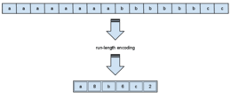

Compressie verwijst naar het proces van het verminderen van de omvang van gegevens om opslagruimte te besparen, de overdrachtsefficiëntie te verbeteren en de verwerkingssnelheid te verhogen. Het doel van compressie is om gegevens te coderen op een manier die minder ruimte inneemt dan de originele, ongecomprimeerde gegevens, terwijl de belangrijkste informatie behouden blijft. Er zijn twee hoofdtypen compressie: lossless (verliesloze) compressie en lossy (verliesvolle) compressie.
Lossless compressie (verliesloze compressie): Bij lossless compressie worden gegevens gecomprimeerd zonder enig verlies aan kwaliteit. De originele gegevens kunnen worden hersteld zonder enig verlies van informatie. Dit type compressie is bijzonder geschikt voor gegevens waarvan nauwkeurigheid en integriteit cruciaal zijn, zoals tekstbestanden, spreadsheetgegevens en archieven. Voorbeelden van lossless compressieformaten zijn ZIP, gzip, en PNG (voor afbeeldingen).
Lossy compressie (verliesvolle compressie): Lossy compressie daarentegen leidt tot enig kwaliteitsverlies in de gegevens. Dit wordt vaak toegepast op multimediabestanden zoals afbeeldingen, audio en video. De mate van kwaliteitsverlies kan variëren en wordt meestal gecontroleerd door de gebruiker of ingesteld volgens standaardinstellingen. Het grote voordeel van lossy compressie is dat het aanzienlijke ruimte bespaart, waardoor het efficiënt is voor het opslaan van grote mediabestanden. Bekende voorbeelden van lossy compressieformaten zijn JPEG (voor afbeeldingen), MP3 (voor audio) en MPEG (voor video).
Compressie-algoritmen gebruiken verschillende technieken om gegevens efficiënter op te slaan. Enkele veelvoorkomende methoden zijn: Entropiecodering: Hierbij worden veelvoorkomende patronen of tekens vervangen door kortere codes. Run-Length Encoding (RLE): Herhaalde opeenvolgende tekens worden vervangen door één teken gevolgd door het aantal herhalingen. Discrete Cosine Transform (DCT): Dit wordt vaak gebruikt voor afbeeldingscompressie en omzet pixelgegevens in frequentiedomeincomponenten. Delta-codering: Verschillen tussen opeenvolgende waarden worden opgeslagen in plaats van de absolute waarden.
Het gebruik van compressie is wijdverbreid in digitale technologieën en wordt toegepast in tal van toepassingen, variërend van het comprimeren van bestanden voor opslag tot het streamen van media over het internet. Het stelt ons in staat om efficiënter gebruik te maken van opslag- en bandbreedteresources.
